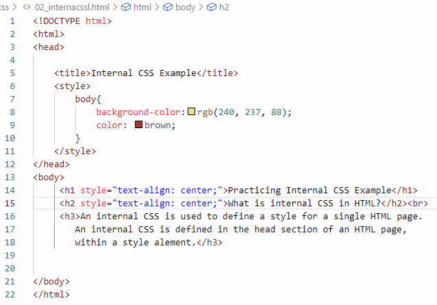

Practicing Internal CSS Example
What is internal CSS in HTML?
An internal CSS is used to define a style for a single HTML page. An internal CSS is defined in the head section of an HTML page, within a style alement.
like... 